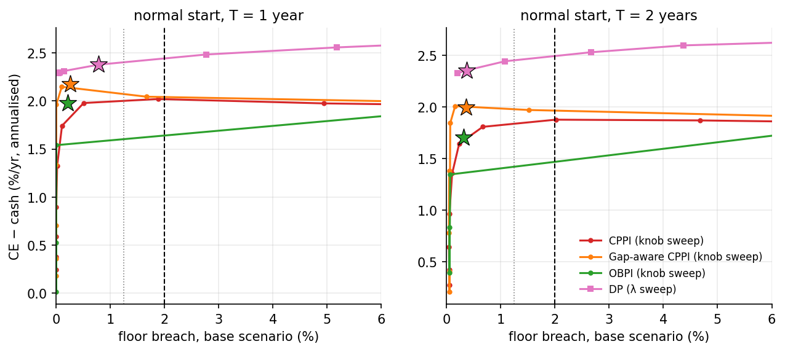
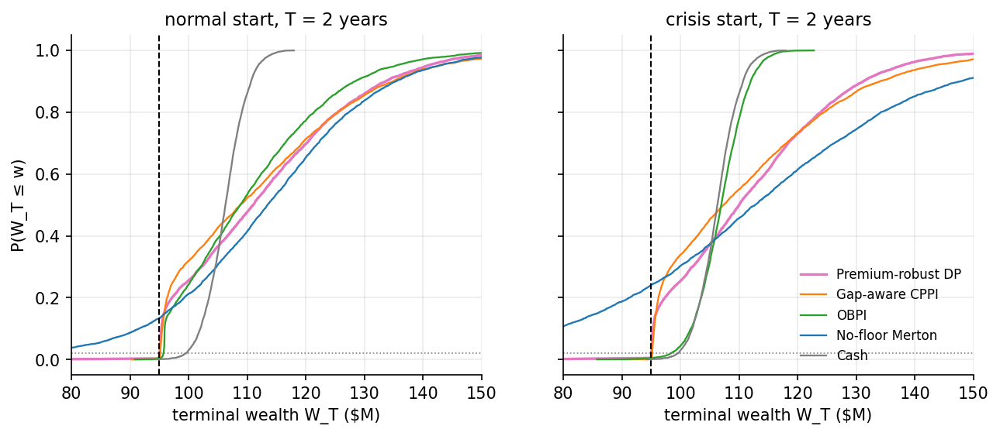
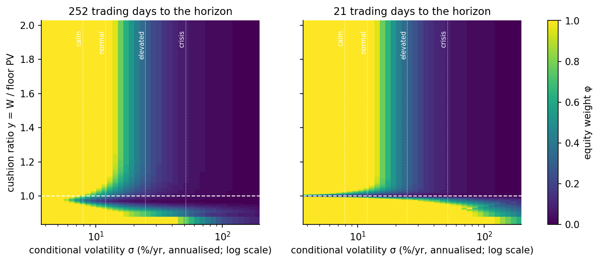
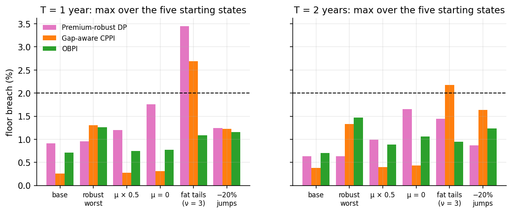
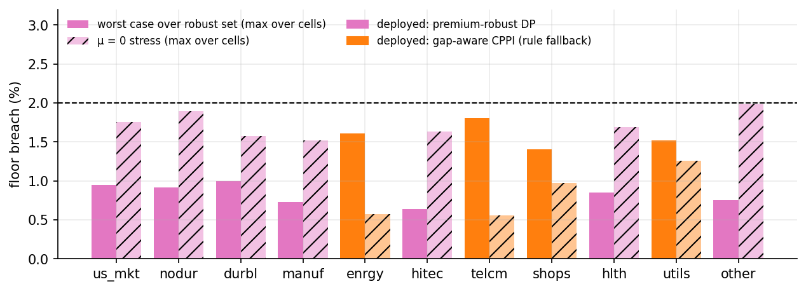

Recommendation. Deploy the premium-robust dynamic-programming (DP) policy. It is a daily equity/cash rule solved for CRRA γ = 2 with a penalty on ending below $95M, and its penalty is calibrated so the floor holds even if the equity premium is half our estimate. A fallback rule, fixed before any strategy results were seen, deploys gap-aware CPPI on any asset whose model diagnostics are weak. On our 11 test assets it routes 4 to CPPI (enrgy, telcm, shops, utils).
Expected performance (US market, base model, 50,000 paths per cell). The certainty equivalent exceeds the cash return by 1.06% to 2.48% per year (annualised), depending on the starting state and horizon. That is +13 to +63 bp/yr more than the best simple floor rule in every one of the 10 named-state × horizon cells. The lowest figure is for an extreme-volatility start at T = 1, where the DP holds mostly cash.
Evidence that the floor holds. The breach probability is at most 0.95% in every starting state, taking the worst of five models at each start: the estimated model plus four robust alternatives. The mandate's limit is 2%. On scenarios held out of tuning, the DP stays below 2% with a zero equity premium (max 1.75%). It exceeds 2% under very fat tails (ν = 3) from crisis and extreme starts at T = 1 (max 3.45%). Gap-aware CPPI fails it too, in more cells, and the daily VaR backtest rejects ν = 3 as too heavy (§3).
Main limitations. (1) The DP spends the premium it is told exists; it is the most premium-sensitive strategy we tested. (2) The interest rate is fixed inside the DP; rate risk is handled only through a conservative floor. (3) The model's unconditional 1–2-year left tail is thinner than history; dynamic de-risking, not the model, carries the protection there. (4) The DP has not been run through the historical backtest (§6.5).
Summary table: us_mkt. Each cell shows base-model breach / worst case over the robust set / breach with zero premium (all in %), then CE − cash (%/yr, annualised). The deployed strategy on us_mkt is the premium-robust DP.
| start (σ0) | T | Deployed | Gap-aware CPPI | OBPI | No-floor Merton |
|---|---|---|---|---|---|
| calm (8%) | 1 | 0.14 / 0.22 / 0.34 · +2.48 | 0.25 / 1.30 / 0.30 · +2.35 | 0.22 / 0.80 / 0.27 · +2.08 | 12.87 / 15.55 / 19.76 · +2.10 |
| calm (8%) | 2 | 0.36 / 0.38 / 1.16 · +2.45 | 0.38 / 1.28 / 0.43 · +2.05 | 0.32 / 0.85 / 0.35 · +1.72 | 12.91 / 17.05 / 22.24 · +1.94 |
| normal (12%) | 1 | 0.79 / 0.88 / 1.75 · +2.38 | 0.26 / 1.28 / 0.31 · +2.17 | 0.22 / 0.80 / 0.26 · +1.97 | 14.02 / 17.64 / 20.88 · +1.89 |
| normal (12%) | 2 | 0.37 / 0.39 / 1.12 · +2.36 | 0.37 / 1.26 / 0.42 · +1.99 | 0.32 / 0.85 / 0.34 · +1.70 | 13.49 / 18.05 / 22.84 · +1.83 |
| elevated (25%) | 1 | 0.35 / 0.43 / 0.76 · +1.94 | 0.22 / 1.18 / 0.27 · +1.74 | 0.21 / 0.55 / 0.23 · +0.98 | 18.75 / 24.44 / 25.36 · +0.70 |
| elevated (25%) | 2 | 0.27 / 0.31 / 0.83 · +2.14 | 0.36 / 1.27 / 0.38 · +1.85 | 0.71 / 1.47 / 1.06 · +0.93 | 16.32 / 22.43 / 25.52 · +1.20 |
| crisis (51%) | 1 | 0.77 / 0.86 / 1.50 · +1.54 | 0.22 / 1.18 / 0.24 · +1.19 | 0.71 / 1.26 / 0.77 · +0.26 | 28.00 / 36.16 / 33.34 · -4.15 |
| crisis (51%) | 2 | 0.63 / 0.63 / 1.65 · +1.97 | 0.35 / 1.33 / 0.38 · +1.65 | 0.43 / 0.78 / 0.55 · +0.28 | 23.46 / 32.01 / 31.78 · -1.35 |
| extreme (125%) | 1 | 0.91 / 0.95 / 1.58 · +1.06 | 0.23 / 1.17 / 0.23 · +0.43 | 0.00 / 0.00 / 0.00 · +0.05 | 43.04 / 52.46 / 46.30 · -23.93 |
| extreme (125%) | 2 | 0.36 / 0.36 / 0.89 · +1.68 | 0.32 / 1.27 / 0.36 · +1.34 | 0.04 / 0.05 / 0.04 · +0.05 | 38.73 / 48.78 / 44.20 · -12.38 |
Source: scripts/07_report_numbers.py → results/report/tables/exec_compact_us_mkt.csv (from results/mc, results_dp_mu/mc summary.parquet)
We start with $100M in cash and trade daily between a diversified equity portfolio and cash (weight φ ∈ [0, 1]; no leverage, no shorting; costs negligible). The horizon T runs from 1 to 2 years and is known at the start. The objective is the certainty equivalent CE = (E[W_T^{1−γ}])^{1/(1−γ)} with γ = 2, subject to P(W_T < $95M) ≤ 2% from every starting condition. Our interpretations:
Sources. Kenneth French Data Library: daily and monthly Fama–French factors (market = Mkt-RF + RF) and the
value-weighted 10-industry daily portfolios, 1926-07-01 to 2026-09-30 (26,338
trading days). The SHA-256 of each file is in data/raw/MANIFEST.json and Appendix A. Nothing else is used.
What the checks found (scripts/01_load_check.py → reports/data_check/data_check.json):
Which data feed which estimate.
| estimate | data | dates | source |
|---|---|---|---|
| Equity model (GJR-GARCH-t), premium, σ states, PIT | us_mkt daily x = log(1+r) − log(1+rf) | 1926-07-01 to 2026-09-30 | params_us_mkt.json |
| Equity model, industries without fallback | ind_* daily (value-weighted) | 1926-07-01 to 2026-09-30 | params_{asset}.json |
| Equity model, fallback industries | ind_* daily (value-weighted) | 1990-01-01 to 2026-09-30 | params_{asset}.json → fallback |
| Vasicek short-rate model, equity–rate ρ | monthly FF RF → rf_ann | 1954-01 to 2026-09 (872 months) | model_report.json → rate |
| Cash accounting in backtests | daily FF RF | 1926-07-01 to 2026-09-30 | data/processed/{asset}.parquet |
| PIT test (expanding refits) | us_mkt daily, quarterly starts | first fit after 10 years; refit every 252 days | results/model/pit_us_mkt.csv |
| Historical backtest | daily r, rf; investor refit every 5 years | first refit after 10 years of data | results/backtest/summary.parquet |
Source: scripts/07_report_numbers.py → results/report/tables/data_windows.csv (from results/model/*, reports/model/*, config.yaml)
The modelling variable is the daily log excess return x = log(1+r) − log(1+rf). Its conditional variance follows GJR-GARCH(1,1) with leverage, and its innovations are standardised t. The conditional arithmetic premium μ_e is constant. We compared four models on us_mkt:
| model | gap_variant | loglik | bic | nu | persistence | half_life_days | uncond_vol_ann | PIT u<0.02 H252 | PIT u<0.02 H504 | VaR0.01 hit rate | VaR0.001 hit rate |
|---|---|---|---|---|---|---|---|---|---|---|---|
| garch_n | none | 88,728 | -177,414 | 0.9884 | 59 | 17.6% | 1.1% | 1.9% | 1.93% | 0.62% | |
| garch_t | none | 89,706 | -179,361 | 5.48 | 0.9967 | 212 | 26.2% | 0.8% | 1.1% | 1.27% | 0.16% |
| gjr_t | none | 89,884 | -179,707 | 5.86 | 0.9881 | 58 | 15.3% | 1.4% | 1.9% | 1.22% | 0.16% |
| egarch_t | none | 89,943 | -179,825 | 5.90 | 0.9850 | 46 | 11.9% | 1.7% | 1.9% | 1.21% | 0.16% |
| garch_n | scale | 88,749 | -177,458 | 0.9882 | 58 | 17.4% | 1.1% | 1.9% | 1.93% | 0.62% | |
| garch_t | scale | 89,712 | -179,373 | 5.51 | 0.9968 | 215 | 26.3% | 1.1% | 0.6% | 1.28% | 0.16% |
| gjr_t | scale | 89,889 | -179,717 | 5.89 | 0.9881 | 58 | 15.3% | 1.4% | 1.9% | 1.23% | 0.16% |
| egarch_t | scale | 89,947 | -179,834 | 5.93 | 0.9850 | 46 | 11.9% | 1.7% | 1.9% | 1.23% | 0.17% |
| gjr_t (FHS innovations) | scale | 89,889 | -179,717 | 5.89 | 0.9881 | 58 | 15.3% | 0.3% | 0.8% |
Source: scripts/07_report_numbers.py → results/report/tables/model_comparison_us_mkt.csv (from results/model/model_comparison_us_mkt.csv)
EGARCH-t has the best BIC, but its simulated 1–2-year tails are almost identical to GJR-t's, so the floor would not change. GJR-t has a closed-form persistence and unconditional variance, and its σ_0 is a transparent state. GARCH-t is kept as an alternative data-generating process in the robust set. Its slow vol mean reversion produces the fat multi-year tails that GJR misses. Fitted us_mkt values: ν = 5.89, persistence 0.9881 (half-life 58 days), unconditional volatility 15.3%.
The sample mean excess return is 7.83% per year with a standard error of 1.67% (105 years). We shrink it 50% toward zero and use 3.91%. The raw estimate is noisy, and the floor fails when the premium is overstated, not when it is understated. The same procedure gives 2.59% to 5.16% across the 11 assets. Because the premium is the input the DP leans on most, we calibrate the DP against a halved premium and test it with a zero premium (§4.6, §6.3).
The short rate is Vasicek, fitted by OLS AR(1) on monthly rates from 1954-01 to 2026-09 (872 months). The 1954 start follows the Treasury–Fed Accord. Estimates: κ = 0.34 (SE 0.10), θ = 4.30%, s = 2.57%, half-life 2.0 years. The equity–rate correlation is ρ = -0.12 (same-month pairing). Under GJR-GARCH the next day's return distribution depends on the past only through σ_t², and the sign of the last shock is already in it. Under Vasicek the rate's future depends only on r_t. So (σ_0, r_0) is everything the model can use at t = 0. The named states for us_mkt are calm 7.9%, normal 11.9%, elevated 24.6%, crisis 51.0% and extreme 125.1% (the 1987-10-19 close), with r_0 = 2.67% (the median). As checks: the model's σ_0 on 2020-03-16 is 115.8% and on 2008-11-20 80.2%.
scripts/02b_var_backtest.py). The fitted ν produces too many 1% and 0.1%
exceedances, meaning the left tail is heavier than a symmetric t. That asymmetry is why filtered historical simulation,
which resamples the empirical residuals, is in the robust set. ν = 3 produces too few exceedances, meaning it is too
heavy. So "fat tails (ν = 3)" is a stress test, not part of the robust set.| asset | persistence_full | valid_draws_full | fallback | start_used | persistence_used | half_life_used | valid_draws_used | nu | premium_used | uncond_vol | pit2_252 | pit2_504 | sigma_crisis | sigma_extreme |
|---|---|---|---|---|---|---|---|---|---|---|---|---|---|---|
| us_mkt | 0.98810 | 100.0% | False | 1926-07-01 | 0.9881 | 58 | 100.0% | 5.89 | 3.91% | 15.3% | 1.4% | 1.9% | 51.0% | 125.1% |
| ind_nodur | 0.99225 | 100.0% | False | 1926-07-01 | 0.9922 | 89 | 100.0% | 5.95 | 3.77% | 15.0% | 2.2% | 1.4% | 39.9% | 116.8% |
| ind_durbl | 0.99500 | 100.0% | False | 1926-07-01 | 0.9950 | 138 | 100.0% | 6.53 | 5.02% | 25.9% | 1.4% | 1.1% | 72.6% | 126.7% |
| ind_manuf | 0.98815 | 100.0% | False | 1926-07-01 | 0.9882 | 58 | 100.0% | 6.54 | 4.19% | 16.6% | 1.7% | 0.8% | 56.6% | 134.5% |
| ind_enrgy | 0.99748 | 50.0% | True | 1990-01-02 | 0.9947 | 130 | 50.0% | 9.05 | 4.97% | 24.8% | 1.9% | 2.0% | 75.1% | 140.5% |
| ind_hitec | 0.99171 | 100.0% | False | 1926-07-01 | 0.9917 | 83 | 100.0% | 6.92 | 5.16% | 22.4% | 1.4% | 1.4% | 67.4% | 154.5% |
| ind_telcm | 0.99996 | 33.3% | True | 1990-01-02 | 0.9843 | 44 | 100.0% | 8.15 | 2.59% | 16.8% | 7.8% | 6.1% | 52.1% | 88.8% |
| ind_shops | 0.99583 | 50.0% | True | 1990-01-02 | 0.9844 | 44 | 100.0% | 8.23 | 5.04% | 17.1% | 0.0% | 0.0% | 47.3% | 96.0% |
| ind_hlth | 0.98483 | 100.0% | False | 1926-07-01 | 0.9848 | 45 | 100.0% | 6.52 | 4.53% | 16.5% | 0.6% | 1.1% | 49.0% | 119.2% |
| ind_utils | 1.00000 | 33.3% | True | 1990-01-02 | 0.9909 | 76 | 100.0% | 7.45 | 3.73% | 15.4% | 2.9% | 3.0% | 52.0% | 104.7% |
| ind_other | 0.98657 | 100.0% | False | 1926-07-01 | 0.9866 | 51 | 100.0% | 5.94 | 3.59% | 17.2% | 2.2% | 2.2% | 63.5% | 130.1% |
Source: scripts/07_report_numbers.py → results/report/tables/assets_model.csv (from results/model/params_{asset}.json, reports/model/{asset}/model_report.json)
Cash earns a floating rate. A strategy that has locked into cash still ends below K if rates fall afterwards: the floor's PV rises and cash does not catch up. That is reinvestment risk, and no cash/equity strategy can hedge it. Every floor strategy therefore protects F̃_t = K·exp(−q_α), where q_α is the α = 0.1% quantile of log cash growth over the remaining horizon under the investor's own Vasicek model. At the median rate this floor sits 1.2% above K at T = 1 and 4.2% above K at T = 2. It costs little CE because every knob is re-tuned to it.
Each knob (m, z, the OBPI floor level, the DP's λ) is set per (σ_0, T) so that the maximum breach over the robust set is at most 1.25%. The robust set is: base model, GARCH-t as the data-generating process, filtered historical simulation, parameter-uncertainty draws, and persistent volatility. The 1.25% target leaves room below 2% for Monte Carlo error, selection noise and the weak PIT. The breach-versus-knob crossing is found with a logistic fit over all candidates rather than by picking the last grid point under the target, which is biased low. Knobs are tuned on one random seed (20,000 paths) and every reported number uses an independent evaluation seed (50,000 paths).

At any breach level the DP's frontier lies above every simple family's. Validation test V6 compares like with like: for each tuned comparator it takes the best DP λ with no higher base breach. The DP earns more in 32 of 32 comparable cells, by 13 to 164 bp/yr.
The DP is the only design that optimises the stated objective under the stated constraint. The others are rules that satisfy the constraint and hope CE follows. Its advantage comes from what the rules cannot do. It holds equity close to the floor when volatility is low and the cushion can absorb a bad day. It cuts equity sharply when volatility is high even with a large cushion (Figure 3). The price is model dependence: the DP believes its premium and volatility dynamics. Gap-aware CPPI uses only σ_t and the floor, so it is the right tool when the model is in doubt. Hence the fallback rule (§6.6).
The DP was validated on us_mkt: Merton limit (V1) pass; grid convergence (V4) pass; DP breach recursion vs Monte Carlo with the rate held constant (V5) pass. Under stochastic rates, 16 of 80 V5 cells fail, all at T = 2. That gap is rate risk, which the fixed-rate DP does not model; we report it rather than tune it away.
| state | T | ce_xcash | q5 | q50 | q95 | p_near_floor | p_below_100 | phi_avg | turnover |
|---|---|---|---|---|---|---|---|---|---|
| calm | 1 | 2.48% | 95.10 | 105.00 | 123.68 | 24.3% | 33.9% | 0.79 | 6.03 |
| calm | 2 | 2.45% | 95.14 | 111.29 | 141.05 | 18.2% | 24.9% | 0.79 | 11.92 |
| normal | 1 | 2.38% | 95.07 | 104.92 | 124.07 | 23.5% | 33.5% | 0.78 | 6.86 |
| normal | 2 | 2.36% | 95.14 | 111.04 | 141.04 | 18.9% | 25.6% | 0.76 | 13.01 |
| elevated | 1 | 1.94% | 95.08 | 104.33 | 122.89 | 24.5% | 34.8% | 0.65 | 7.09 |
| elevated | 2 | 2.14% | 95.14 | 110.57 | 139.61 | 19.4% | 26.0% | 0.70 | 12.95 |
| crisis | 1 | 1.54% | 95.07 | 103.96 | 121.24 | 22.5% | 34.7% | 0.54 | 6.14 |
| crisis | 2 | 1.97% | 95.11 | 110.24 | 138.01 | 18.3% | 25.4% | 0.65 | 11.90 |
| extreme | 1 | 1.06% | 95.07 | 103.47 | 118.85 | 19.3% | 33.6% | 0.39 | 4.83 |
| extreme | 2 | 1.68% | 95.12 | 109.57 | 135.49 | 18.2% | 25.5% | 0.56 | 10.55 |
Source: scripts/07_report_numbers.py → results/report/tables/performance_dp_us_mkt.csv (from results_dp_mu/mc/summary.parquet + terminal subsamples (5k paths per cell))
q5/q50/q95 are terminal-wealth quantiles in $M. "Near floor" is P(K ≤ W_T < (1 + 2%)K) and "below 100" is P(W_T < $100M), both from a 5,000-path subsample. φ is the average equity weight, and turnover is the average Σ|Δφ| per path. Trading costs are negligible per the mandate.
What to expect. From a calm or normal start the DP earns about 2.4% per year over cash, with average equity weight 0.78 and median wealth $111.0M after two years. From a crisis or extreme start it holds much less equity at first (average φ 0.39 at T = 1 from the extreme state), so CE − cash falls to 1.1% at T = 1. Longer horizons recover more (1.7% at T = 2), because volatility mean-reverts and the strategy has time to re-risk. Across states, 18%–25% of outcomes end just above the floor: the DP spends cushion when it is cheap and parks near the floor when it is not. The committee should expect a sizeable minority of years in which the result is "floor plus a little".


Reading the policy. Equity is the white-to-yellow region. (1) Away from the floor and at low volatility the DP is fully invested, as Merton would be (1.00 at y = 1.5, normal σ). (2) Volatility alone de-risks: at the same cushion, φ drops to 0.07 at crisis-level σ, because one bad day can then consume the cushion. (3) Near the floor the weight falls fast as the cushion thins. Just below the floor the DP gambles (high φ): once a breach is likely the penalty is mostly paid, so variance helps. This is a known feature of the non-concave Lagrangian problem. It is rare in practice because the policy rarely lets wealth get there. (4) Close to the horizon the no-trade boundary sharpens.
The DP's worst-case breach is at most 0.95% across all named states and both horizons. For
gap-aware CPPI it is 1.33% and for OBPI 1.47%. The DP's λ was solved and
calibrated at T ∈ {1, 2} for the named states; between them it uses the more conservative neighbouring λ (it never
interpolates λ). Gap-aware CPPI is also evaluated on a dense σ_0 × r_0 grid and at the intermediate horizons (the app reads these rows from results/mc/summary.parquet).
With 50,000 evaluation paths, the standard error of a 2% breach estimate is 0.063 percentage points (0.099 at the 20,000 paths used for industries). The gap between our worst case and 2% is many standard errors. The tuning seed and evaluation seed are independent, so the reported breach is not the one the tuner minimised.

| strategy | T | worst_robust_max | mu_low_max | mu_low_argmax | mu_zero_max | mu_zero_argmax | fat_tails_max | fat_tails_argmax | jump_max | jump_argmax |
|---|---|---|---|---|---|---|---|---|---|---|
| Premium-robust DP | 1 | 0.95% | 1.20% | extreme | 1.75% | normal | 3.45% | extreme | 1.25% | normal |
| Premium-robust DP | 2 | 0.63% | 0.99% | crisis | 1.65% | crisis | 1.45% | crisis | 0.87% | crisis |
| DP (base λ*) | 1 | 0.95% | 1.20% | extreme | 1.78% | calm | 3.45% | extreme | 1.29% | calm |
| DP (base λ*) | 2 | 1.12% | 1.93% | calm | 3.25% | calm | 1.63% | elevated | 1.47% | calm |
| Gap-aware CPPI | 1 | 1.30% | 0.28% | normal | 0.31% | normal | 2.69% | extreme | 1.23% | calm |
| Gap-aware CPPI | 2 | 1.33% | 0.40% | calm | 0.43% | calm | 2.18% | crisis | 1.63% | calm |
| OBPI | 1 | 1.26% | 0.75% | crisis | 0.77% | crisis | 1.09% | normal | 1.16% | calm |
| OBPI | 2 | 1.47% | 0.88% | elevated | 1.06% | elevated | 0.95% | calm | 1.23% | calm |
| CPPI | 1 | 1.24% | 0.29% | calm | 0.29% | calm | 1.21% | calm | 1.34% | calm |
| CPPI | 2 | 1.25% | 0.35% | calm | 0.35% | calm | 1.10% | calm | 1.40% | calm |
| No-floor Merton | 1 | 52.46% | 44.64% | extreme | 46.30% | extreme | 39.15% | extreme | 42.94% | extreme |
| No-floor Merton | 2 | 48.78% | 41.54% | extreme | 44.20% | extreme | 33.17% | extreme | 38.82% | extreme |
Source: scripts/07_report_numbers.py → results/report/tables/stress_us_mkt.csv (from results/mc, results_dp/mc, results_dp_mu/mc summary.parquet)
Failures (breach > 2%), us_mkt:
| strategy | scenario | state | T | breach |
|---|---|---|---|---|
| Premium-robust DP | fat_tails | crisis | 1 | 2.64% |
| Premium-robust DP | fat_tails | extreme | 1 | 3.45% |
| Gap-aware CPPI | fat_tails | calm | 1 | 2.35% |
| Gap-aware CPPI | fat_tails | calm | 2 | 2.16% |
| Gap-aware CPPI | fat_tails | normal | 1 | 2.44% |
| Gap-aware CPPI | fat_tails | normal | 2 | 2.16% |
| Gap-aware CPPI | fat_tails | elevated | 1 | 2.50% |
| Gap-aware CPPI | fat_tails | elevated | 2 | 2.12% |
| Gap-aware CPPI | fat_tails | crisis | 1 | 2.51% |
| Gap-aware CPPI | fat_tails | crisis | 2 | 2.18% |
| Gap-aware CPPI | fat_tails | extreme | 1 | 2.69% |
| Gap-aware CPPI | fat_tails | extreme | 2 | 2.15% |
Source: scripts/07_report_numbers.py → results/report/tables/stress_failures_us_mkt.csv (from results/mc, results_dp_mu/mc summary.parquet)
| strategy | T | n_breaches | gap | gradual | rate |
|---|---|---|---|---|---|
| Premium-robust DP | 1 | 7055 | 43.1% | 52.5% | 4.4% |
| Premium-robust DP | 2 | 4583 | 30.2% | 54.7% | 15.1% |
| Gap-aware CPPI | 1 | 6290 | 98.4% | 0.0% | 1.6% |
| Gap-aware CPPI | 2 | 7403 | 83.8% | 0.0% | 16.2% |
| OBPI | 1 | 5091 | 63.6% | 34.5% | 1.9% |
| OBPI | 2 | 6444 | 64.8% | 25.7% | 9.6% |
Source: scripts/07_report_numbers.py → results/report/tables/breach_decomposition_us_mkt.csv (from results/mc, results_dp_mu/mc summary.parquet (robust set, named states))
A breach is classified by the day the cushion was last crossed. Gap: one day's equity loss exceeded a cushion that could absorb a one-σ move. Gradual: an eroded cushion. Rate: the floor PV rose or cash under-earned. Gap-aware CPPI's breaches are almost all gaps, which is the residual risk a daily-rebalanced floor cannot remove. The DP's are split between gaps and gradual erosion, because it deliberately keeps some equity near the floor. At T = 2 about 15% are rate-driven: the fixed-rate DP does not see rate risk (§7).
We run each strategy from every month-end start since the first refit, with the investor re-estimated every 5 years on past data only. The table shows the gap-aware CPPI and OBPI rows at T = 1 and 2 (overall and by σ_0 bucket; by decade in Appendix B):
| strategy | group_type | group | n_starts | n_eff | breach | breach_lo | breach_hi | ce_xcash | T |
|---|---|---|---|---|---|---|---|---|---|
| Gap-aware CPPI | overall | all | 1089 | 91 | 0.6% | 0.1% | 5.1% | 5.67% | 1 |
| Gap-aware CPPI | overall | all | 1077 | 45 | 0.9% | 0.1% | 9.5% | 4.61% | 2 |
| No-floor Merton | overall | all | 1089 | 91 | 8.7% | 4.5% | 16.3% | 3.31% | 1 |
| No-floor Merton | overall | all | 1077 | 45 | 6.6% | 2.3% | 17.8% | 3.29% | 2 |
| OBPI | overall | all | 1089 | 91 | 0.3% | 0.0% | 4.6% | 4.32% | 1 |
| OBPI | overall | all | 1077 | 45 | 0.0% | 0.0% | 7.9% | 3.67% | 2 |
| Gap-aware CPPI | bucket | calm | 337 | 28 | 0.0% | 0.0% | 12.0% | 7.44% | 1 |
| Gap-aware CPPI | bucket | crisis | 57 | 5 | 0.0% | 0.0% | 44.7% | 6.75% | 1 |
| Gap-aware CPPI | bucket | elevated | 284 | 24 | 0.4% | 0.0% | 14.6% | 4.24% | 1 |
| Gap-aware CPPI | bucket | normal | 411 | 34 | 1.2% | 0.1% | 12.2% | 5.07% | 1 |
| Gap-aware CPPI | bucket | calm | 336 | 14 | 1.2% | 0.0% | 23.4% | 6.67% | 2 |
| Gap-aware CPPI | bucket | crisis | 56 | 2 | 0.0% | 0.0% | 62.2% | 3.25% | 2 |
| Gap-aware CPPI | bucket | elevated | 280 | 12 | 0.4% | 0.0% | 25.3% | 2.66% | 2 |
| Gap-aware CPPI | bucket | normal | 405 | 17 | 1.2% | 0.1% | 20.5% | 4.51% | 2 |
| No-floor Merton | bucket | calm | 337 | 28 | 4.2% | 0.8% | 18.5% | 3.40% | 1 |
| No-floor Merton | bucket | crisis | 57 | 5 | 10.5% | 1.1% | 55.2% | 9.93% | 1 |
| No-floor Merton | bucket | elevated | 284 | 24 | 16.9% | 6.8% | 36.3% | 2.37% | 1 |
| No-floor Merton | bucket | normal | 411 | 34 | 6.6% | 1.9% | 20.0% | 2.99% | 1 |
| No-floor Merton | bucket | calm | 336 | 14 | 3.6% | 0.4% | 26.8% | 2.78% | 2 |
| No-floor Merton | bucket | crisis | 56 | 2 | 10.7% | 0.6% | 69.7% | 7.22% | 2 |
| No-floor Merton | bucket | elevated | 280 | 12 | 11.8% | 2.6% | 39.9% | 2.91% | 2 |
| No-floor Merton | bucket | normal | 405 | 17 | 4.9% | 0.8% | 25.8% | 3.44% | 2 |
| OBPI | bucket | calm | 337 | 28 | 0.0% | 0.0% | 12.0% | 6.51% | 1 |
| OBPI | bucket | crisis | 57 | 5 | 0.0% | 0.0% | 44.7% | 1.75% | 1 |
| OBPI | bucket | elevated | 284 | 24 | 0.0% | 0.0% | 14.0% | 2.72% | 1 |
| OBPI | bucket | normal | 411 | 34 | 0.7% | 0.0% | 11.4% | 4.03% | 1 |
| OBPI | bucket | calm | 336 | 14 | 0.0% | 0.0% | 21.5% | 5.30% | 2 |
| OBPI | bucket | crisis | 56 | 2 | 0.0% | 0.0% | 62.2% | 1.07% | 2 |
| OBPI | bucket | elevated | 280 | 12 | 0.0% | 0.0% | 24.8% | 1.91% | 2 |
| OBPI | bucket | normal | 405 | 17 | 0.0% | 0.0% | 18.5% | 3.97% | 2 |
Source: scripts/07_report_numbers.py → results/report/tables/backtest_us_mkt.csv (from results/backtest/summary.parquet)
What this can and cannot show. Windows overlap, so 1,089 start dates carry only about 91 independent 1-year observations. The 95% upper bound on the realised breach rate is 5.1% overall and 45% for crisis starts (effective n 5). The backtest can refute a badly wrong model, as it does for the no-floor Merton rule (8.7%). It cannot confirm a 2% bound. The knobs also carry a mild look-ahead (tuned on the full-sample model). The DP has not been backtested: its policy is solved on full-sample parameters, so a fair historical test needs re-solving at each refit date. This is further work (§8).
The committee will run the same procedure on other assets. We ran the full procedure on the 10 industry portfolios. Each asset gets its own estimates, states, tuning and λ calibration. No constants carry over from us_mkt.
Deployment rule (src/gf/deployment.py, decided before results were seen). Deploy gap-aware CPPI instead of the DP
if (a) the fallback estimation window was triggered, (b) fewer than 70% of
parameter draws are valid after the fallback, or (c) the PIT test rejects at 1 or 2 years.
| asset | flag_fallback_window | fallback_reasons | valid_draw_share | flag_valid_draws | flag_pit_reject | pit_rejections | chosen_strategy |
|---|---|---|---|---|---|---|---|
| us_mkt | False | 100.0% | False | False | dp_premrobust | ||
| ind_nodur | False | 100.0% | False | False | dp_premrobust | ||
| ind_durbl | False | 100.0% | False | False | dp_premrobust | ||
| ind_manuf | False | 100.0% | False | False | dp_premrobust | ||
| ind_enrgy | True | valid draws 0.50 < 0.7 | 50.0% | True | False | cppi_vol | |
| ind_hitec | False | 100.0% | False | False | dp_premrobust | ||
| ind_telcm | True | persistence 0.99996 >= 0.998; valid draws 0.33 < 0.7 | 100.0% | False | True | H=252 u<0.01: too thin; H=252 u<0.02: too thin; H=252 u<0.05: too thin | cppi_vol |
| ind_shops | True | valid draws 0.50 < 0.7 | 100.0% | False | False | cppi_vol | |
| ind_hlth | False | 100.0% | False | False | dp_premrobust | ||
| ind_utils | True | persistence 1.00000 >= 0.998; valid draws 0.33 < 0.7 | 100.0% | False | False | cppi_vol | |
| ind_other | False | 100.0% | False | False | dp_premrobust |
Source: scripts/07_report_numbers.py → results/report/tables/deployment.csv (from gf.deployment.deployment_table → results/deployment.csv)

| asset | strategy | n_cells | worst_max | base_max | mu_zero_max | fat_tails_max | jump_max | ce_min | ce_median | ce_max | n_robust_scen |
|---|---|---|---|---|---|---|---|---|---|---|---|
| us_mkt | Deployed (Premium-robust DP) | 10 | 0.95% | 0.91% | 1.75% | 3.45% | 1.25% | 1.06% | 2.05% | 2.48% | 5 |
| us_mkt | Premium-robust DP | 10 | 0.95% | 0.91% | 1.75% | 3.45% | 1.25% | 1.06% | 2.05% | 2.48% | 5 |
| us_mkt | Gap-aware CPPI | 10 | 1.33% | 0.38% | 0.43% | 2.69% | 1.63% | 0.43% | 1.79% | 2.35% | 5 |
| us_mkt | OBPI | 10 | 1.47% | 0.71% | 1.06% | 1.09% | 1.23% | 0.05% | 0.95% | 2.08% | 5 |
| ind_nodur | Deployed (Premium-robust DP) | 10 | 0.92% | 0.77% | 1.89% | 2.79% | 1.21% | 0.89% | 2.15% | 2.72% | 5 |
| ind_nodur | Premium-robust DP | 10 | 0.92% | 0.77% | 1.89% | 2.79% | 1.21% | 0.89% | 2.15% | 2.72% | 5 |
| ind_nodur | Gap-aware CPPI | 10 | 1.31% | 0.39% | 0.48% | 2.52% | 1.62% | 0.04% | 1.86% | 2.55% | 5 |
| ind_nodur | OBPI | 10 | 1.39% | 0.91% | 1.19% | 0.98% | 1.28% | 0.05% | 1.23% | 2.27% | 5 |
| ind_durbl | Deployed (Premium-robust DP) | 10 | 1.00% | 0.76% | 1.58% | 2.47% | 1.06% | 0.27% | 1.17% | 2.02% | 5 |
| ind_durbl | Premium-robust DP | 10 | 1.00% | 0.76% | 1.58% | 2.47% | 1.06% | 0.27% | 1.17% | 2.02% | 5 |
| ind_durbl | Gap-aware CPPI | 10 | 1.68% | 0.97% | 1.08% | 5.32% | 2.07% | -1.92% | 0.42% | 1.66% | 5 |
| ind_durbl | OBPI | 10 | 1.12% | 0.89% | 1.17% | 1.88% | 1.44% | 0.06% | 0.54% | 1.58% | 5 |
| ind_manuf | Deployed (Premium-robust DP) | 10 | 0.73% | 0.64% | 1.52% | 2.33% | 1.01% | 0.74% | 1.82% | 2.31% | 5 |
| ind_manuf | Premium-robust DP | 10 | 0.73% | 0.64% | 1.52% | 2.33% | 1.01% | 0.74% | 1.82% | 2.31% | 5 |
| ind_manuf | Gap-aware CPPI | 10 | 1.49% | 0.33% | 0.40% | 2.50% | 1.35% | -0.15% | 1.53% | 2.15% | 5 |
| ind_manuf | OBPI | 10 | 1.65% | 1.15% | 1.74% | 1.20% | 1.22% | 0.04% | 0.87% | 1.92% | 5 |
| ind_enrgy | Deployed (Gap-aware CPPI) | 10 | 1.61% | 0.50% | 0.57% | 1.47% | 1.32% | -2.09% | 0.57% | 1.64% | 5 |
| ind_enrgy | Premium-robust DP | 10 | 1.29% | 0.98% | 2.24% | 1.24% | 1.21% | 0.21% | 1.25% | 1.97% | 5 |
| ind_enrgy | Gap-aware CPPI | 10 | 1.61% | 0.50% | 0.57% | 1.47% | 1.32% | -2.09% | 0.57% | 1.64% | 5 |
| ind_enrgy | OBPI | 10 | 1.29% | 1.05% | 1.19% | 0.95% | 1.15% | 0.04% | 0.66% | 1.59% | 5 |
| ind_hitec | Deployed (Premium-robust DP) | 10 | 0.64% | 0.56% | 1.63% | 1.61% | 0.77% | 0.52% | 1.72% | 2.44% | 5 |
| ind_hitec | Premium-robust DP | 10 | 0.64% | 0.56% | 1.63% | 1.61% | 0.77% | 0.52% | 1.72% | 2.44% | 5 |
| ind_hitec | Gap-aware CPPI | 10 | 1.35% | 0.57% | 0.66% | 2.61% | 1.54% | -0.79% | 1.27% | 2.19% | 5 |
| ind_hitec | OBPI | 10 | 1.57% | 1.21% | 1.79% | 1.35% | 1.36% | 0.05% | 0.78% | 1.97% | 5 |
| ind_telcm | Deployed (Gap-aware CPPI) | 10 | 1.80% | 0.56% | 0.56% | 2.04% | 1.66% | -0.65% | 0.33% | 0.66% | 5 |
| ind_telcm | Premium-robust DP | 10 | 1.18% | 0.73% | 1.21% | 1.06% | 1.17% | 0.43% | 0.73% | 0.90% | 5 |
| ind_telcm | Gap-aware CPPI | 10 | 1.80% | 0.56% | 0.56% | 2.04% | 1.66% | -0.65% | 0.33% | 0.66% | 5 |
| ind_telcm | OBPI | 10 | 1.24% | 0.92% | 1.23% | 1.08% | 1.31% | 0.03% | 0.34% | 0.75% | 5 |
| ind_shops | Deployed (Gap-aware CPPI) | 10 | 1.41% | 0.83% | 0.97% | 1.97% | 1.82% | 0.54% | 1.96% | 2.57% | 5 |
| ind_shops | Premium-robust DP | 10 | 1.04% | 0.74% | 1.85% | 1.11% | 1.03% | 1.42% | 2.37% | 2.79% | 5 |
| ind_shops | Gap-aware CPPI | 10 | 1.41% | 0.83% | 0.97% | 1.97% | 1.82% | 0.54% | 1.96% | 2.57% | 5 |
| ind_shops | OBPI | 10 | 1.30% | 0.60% | 0.97% | 0.85% | 1.51% | 0.13% | 1.26% | 2.37% | 5 |
| ind_hlth | Deployed (Premium-robust DP) | 10 | 0.85% | 0.81% | 1.69% | 1.94% | 1.17% | 1.04% | 2.10% | 2.46% | 5 |
| ind_hlth | Premium-robust DP | 10 | 0.85% | 0.81% | 1.69% | 1.94% | 1.17% | 1.04% | 2.10% | 2.46% | 5 |
| ind_hlth | Gap-aware CPPI | 10 | 1.49% | 0.40% | 0.48% | 2.56% | 1.39% | 0.26% | 1.75% | 2.25% | 5 |
| ind_hlth | OBPI | 10 | 1.35% | 1.10% | 1.74% | 1.42% | 1.31% | 0.06% | 1.20% | 2.02% | 5 |
| ind_utils | Deployed (Gap-aware CPPI) | 10 | 1.52% | 1.01% | 1.26% | 3.56% | 2.04% | -1.07% | 1.24% | 1.94% | 5 |
| ind_utils | Premium-robust DP | 10 | 1.11% | 1.08% | 1.73% | 2.21% | 1.21% | 0.54% | 1.62% | 2.12% | 5 |
| ind_utils | Gap-aware CPPI | 10 | 1.52% | 1.01% | 1.26% | 3.56% | 2.04% | -1.07% | 1.24% | 1.94% | 5 |
| ind_utils | OBPI | 10 | 1.08% | 0.63% | 0.69% | 1.00% | 1.31% | 0.06% | 0.96% | 1.84% | 5 |
| ind_other | Deployed (Premium-robust DP) | 10 | 0.75% | 0.75% | 1.98% | 2.94% | 1.13% | 0.85% | 1.52% | 1.92% | 5 |
| ind_other | Premium-robust DP | 10 | 0.75% | 0.75% | 1.98% | 2.94% | 1.13% | 0.85% | 1.52% | 1.92% | 5 |
| ind_other | Gap-aware CPPI | 10 | 1.35% | 0.56% | 0.61% | 3.44% | 1.74% | 0.05% | 1.24% | 1.75% | 5 |
| ind_other | OBPI | 10 | 1.57% | 1.08% | 1.62% | 1.54% | 1.34% | 0.04% | 0.66% | 1.60% | 5 |
Source: scripts/07_report_numbers.py → results/report/tables/industries.csv (from results/mc, results_dp_mu/mc, results_ind_extra/mc summary.parquet)
A cost of the fallback. On flagged assets, gap-aware CPPI can earn less than cash from crisis or extreme starts (deployed minimum CE − cash -2.09%, enrgy). This is not a lock into cash: only 0.7%–4.6% of paths hold φ ≈ 0 at the end. It is a soft lock-in. With m = 1/(zσ), an unclipped cushion has a constant daily volatility of 1/z (16%–22% in these cells), so most paths bleed their cushion within weeks of a high-volatility start. They then end just above the conservative floor: 46%–69% of paths finish within 2% of it, against 35% in other cells. Mean wealth still beats cash; the γ = 2 CE does not.
| asset | state | T | sigma0 | z | cushion_daily_vol | ce_xcash | locked_cash_share | phi_avg | p_near_floor | median_W | mean_W | breach_base |
|---|---|---|---|---|---|---|---|---|---|---|---|---|
| ind_enrgy | extreme | 1 | 140.5% | 4.66 | 21.4% | -2.09% | 4.6% | 0.19 | 69.3% | 95.71 | 104.44 | 0.43% |
| ind_durbl | extreme | 1 | 126.7% | 4.89 | 20.5% | -1.92% | 3.3% | 0.22 | 65.2% | 95.90 | 103.93 | 0.88% |
| ind_utils | extreme | 1 | 104.7% | 4.45 | 22.5% | -1.07% | 1.7% | 0.32 | 58.8% | 95.93 | 104.23 | 0.99% |
| ind_enrgy | crisis | 1 | 75.1% | 4.72 | 21.2% | -0.97% | 2.3% | 0.29 | 62.8% | 95.90 | 104.74 | 0.38% |
| ind_durbl | crisis | 1 | 72.6% | 4.87 | 20.5% | -0.88% | 2.0% | 0.31 | 59.6% | 96.08 | 104.54 | 0.84% |
| ind_hitec | extreme | 1 | 154.5% | 5.78 | 17.3% | -0.79% | 1.7% | 0.27 | 53.1% | 96.59 | 104.47 | 0.28% |
| ind_telcm | extreme | 1 | 88.8% | 4.68 | 21.4% | -0.65% | 0.8% | 0.39 | 54.2% | 96.28 | 103.98 | 0.56% |
| ind_enrgy | extreme | 2 | 140.5% | 4.80 | 20.8% | -0.62% | 1.4% | 0.28 | 54.6% | 96.38 | 109.80 | 0.43% |
| ind_durbl | extreme | 2 | 126.7% | 4.83 | 20.7% | -0.52% | 1.5% | 0.31 | 51.2% | 96.69 | 109.42 | 0.90% |
| ind_telcm | crisis | 1 | 52.1% | 4.65 | 21.5% | -0.18% | 0.7% | 0.47 | 50.3% | 96.70 | 104.21 | 0.52% |
| ind_manuf | extreme | 1 | 134.5% | 6.15 | 16.3% | -0.15% | 0.8% | 0.35 | 45.9% | 97.39 | 104.44 | 0.24% |
Source: scripts/07_report_numbers.py → results/report/tables/cppi_gap_negative_ce.csv (from results/mc/summary.parquet + terminal subsamples)
Use it on a broad equity portfolio with a long, stable daily history. That means the asset's diagnostics are clean (no fallback window, valid parameter draws, PIT not rejected), the horizon is 1–2 years, and the strategy can trade every day.
Do not rely on it in these cases:
scripts/01–09), so this is a re-run, not a research project.gf.deployment.deployment_choice) and should be run, not remembered.Fast path (from committed results, minutes): python scripts/07_report_numbers.py then
python scripts/08_build_report.py rebuilds results/report/numbers.json, every table, every figure,
deliverables/report.pdf and deliverables/deck.pdf. Full path (several hours on 8 cores; run times per stage in DECISIONS.md): stages 01–06 as listed in
DECISIONS.md and README.md, then 07–09.
F-F_Research_Data_Factors_daily.csv: 3f7910502dd6f188748210e5145d95642de1d8cff56c2cf0fa85985299610ff0 (1926-07-01 to 2026-09-30, downloaded 2026-10-26)F-F_Research_Data_Factors.csv: a3894d74d553cab812eabbe706bdbf443c97eb20b24b05e3e5f3ce47e46b90bb (1926-07-31 to 2026-09-30, downloaded 2026-10-26)10_Industry_Portfolios_Daily.csv: 01cfe3d5e54f6ddfcc3dc84fb793f10f6b0218fe59f780969f4dca84e72e823e (1926-07-01 to 2026-09-30, downloaded 2026-10-26)9773244d50a13e39100c0b797d83d09d4ddbd288; this report from the commit tagged in the
submission README.results/report/numbers.json or a row in results/report/tables/,
written by scripts/07_report_numbers.py. The map from report items to keys is the table at the top of DECISIONS.md.B.1 us_mkt: every strategy, named state and horizon (breach in %, CE − cash in %/yr annualised).
| strategy | state | T | breach_base | breach_worst | worst_scen | breach_mu_low | breach_mu_zero | breach_fat_tails | breach_jump | ce_xcash | phi_avg | turnover |
|---|---|---|---|---|---|---|---|---|---|---|---|---|
| Premium-robust DP | calm | 1 | 0.14% | 0.22% | dgp_garch_t | 0.21% | 0.34% | 0.79% | 0.53% | 2.48% | 0.79 | 6.03 |
| Premium-robust DP | calm | 2 | 0.36% | 0.38% | fhs | 0.62% | 1.16% | 0.85% | 0.71% | 2.45% | 0.79 | 11.92 |
| Premium-robust DP | normal | 1 | 0.79% | 0.88% | dgp_garch_t | 1.12% | 1.75% | 1.85% | 1.25% | 2.38% | 0.78 | 6.86 |
| Premium-robust DP | normal | 2 | 0.37% | 0.39% | fhs | 0.61% | 1.12% | 0.89% | 0.72% | 2.36% | 0.76 | 13.01 |
| Premium-robust DP | elevated | 1 | 0.35% | 0.43% | dgp_garch_t | 0.51% | 0.76% | 1.49% | 0.70% | 1.94% | 0.65 | 7.09 |
| Premium-robust DP | elevated | 2 | 0.27% | 0.31% | fhs | 0.48% | 0.83% | 0.86% | 0.56% | 2.14% | 0.70 | 12.95 |
| Premium-robust DP | crisis | 1 | 0.77% | 0.86% | dgp_garch_t | 1.08% | 1.50% | 2.64% | 1.10% | 1.54% | 0.54 | 6.14 |
| Premium-robust DP | crisis | 2 | 0.63% | 0.63% | base | 0.99% | 1.65% | 1.45% | 0.87% | 1.97% | 0.65 | 11.90 |
| Premium-robust DP | extreme | 1 | 0.91% | 0.95% | param_unc | 1.20% | 1.58% | 3.45% | 1.21% | 1.06% | 0.39 | 4.83 |
| Premium-robust DP | extreme | 2 | 0.36% | 0.36% | param_unc | 0.54% | 0.89% | 1.23% | 0.63% | 1.68% | 0.56 | 10.55 |
| DP (base λ*) | calm | 1 | 0.77% | 0.84% | dgp_garch_t | 1.16% | 1.78% | 1.65% | 1.29% | 2.55% | 0.81 | 5.78 |
| DP (base λ*) | calm | 2 | 1.06% | 1.12% | dgp_garch_t | 1.93% | 3.25% | 1.51% | 1.47% | 2.53% | 0.81 | 11.35 |
| DP (base λ*) | normal | 1 | 0.79% | 0.88% | dgp_garch_t | 1.12% | 1.75% | 1.85% | 1.25% | 2.38% | 0.78 | 6.86 |
| DP (base λ*) | normal | 2 | 0.37% | 0.39% | fhs | 0.61% | 1.12% | 0.89% | 0.72% | 2.36% | 0.76 | 13.01 |
| DP (base λ*) | elevated | 1 | 0.35% | 0.43% | dgp_garch_t | 0.51% | 0.76% | 1.49% | 0.70% | 1.94% | 0.65 | 7.09 |
| DP (base λ*) | elevated | 2 | 0.92% | 0.94% | dgp_garch_t | 1.52% | 2.50% | 1.63% | 1.23% | 2.21% | 0.73 | 12.87 |
| DP (base λ*) | crisis | 1 | 0.77% | 0.86% | dgp_garch_t | 1.08% | 1.50% | 2.64% | 1.10% | 1.54% | 0.54 | 6.14 |
| DP (base λ*) | crisis | 2 | 0.63% | 0.63% | base | 0.99% | 1.65% | 1.45% | 0.87% | 1.97% | 0.65 | 11.90 |
| DP (base λ*) | extreme | 1 | 0.91% | 0.95% | param_unc | 1.20% | 1.58% | 3.45% | 1.21% | 1.06% | 0.39 | 4.83 |
| DP (base λ*) | extreme | 2 | 0.36% | 0.36% | param_unc | 0.54% | 0.89% | 1.23% | 0.63% | 1.68% | 0.56 | 10.55 |
| Gap-aware CPPI | calm | 1 | 0.25% | 1.30% | fhs | 0.28% | 0.30% | 2.35% | 1.23% | 2.35% | 0.78 | 5.61 |
| Gap-aware CPPI | calm | 2 | 0.38% | 1.28% | fhs | 0.40% | 0.43% | 2.16% | 1.63% | 2.05% | 0.71 | 13.17 |
| Gap-aware CPPI | normal | 1 | 0.26% | 1.28% | fhs | 0.28% | 0.31% | 2.44% | 1.18% | 2.17% | 0.75 | 6.49 |
| Gap-aware CPPI | normal | 2 | 0.37% | 1.26% | fhs | 0.39% | 0.42% | 2.16% | 1.59% | 1.99% | 0.69 | 12.95 |
| Gap-aware CPPI | elevated | 1 | 0.22% | 1.18% | fhs | 0.26% | 0.27% | 2.50% | 1.11% | 1.74% | 0.66 | 7.06 |
| Gap-aware CPPI | elevated | 2 | 0.36% | 1.27% | fhs | 0.36% | 0.38% | 2.12% | 1.50% | 1.85% | 0.66 | 12.38 |
| Gap-aware CPPI | crisis | 1 | 0.22% | 1.18% | fhs | 0.24% | 0.24% | 2.51% | 0.92% | 1.19% | 0.55 | 6.59 |
| Gap-aware CPPI | crisis | 2 | 0.35% | 1.33% | fhs | 0.36% | 0.38% | 2.18% | 1.38% | 1.65% | 0.61 | 11.68 |
| Gap-aware CPPI | extreme | 1 | 0.23% | 1.17% | fhs | 0.23% | 0.23% | 2.69% | 0.71% | 0.43% | 0.41 | 5.47 |
| Gap-aware CPPI | extreme | 2 | 0.32% | 1.27% | fhs | 0.33% | 0.36% | 2.15% | 1.21% | 1.34% | 0.55 | 10.68 |
| CPPI | calm | 1 | 0.30% | 1.24% | fhs | 0.29% | 0.29% | 1.21% | 1.34% | 2.04% | 0.67 | 5.28 |
| CPPI | calm | 2 | 0.37% | 1.24% | fhs | 0.35% | 0.35% | 1.10% | 1.40% | 1.73% | 0.59 | 8.92 |
| CPPI | normal | 1 | 0.30% | 1.24% | fhs | 0.29% | 0.28% | 1.20% | 1.28% | 1.93% | 0.64 | 5.34 |
| CPPI | normal | 2 | 0.35% | 1.19% | dgp_garch_t | 0.33% | 0.33% | 1.08% | 1.39% | 1.70% | 0.59 | 8.88 |
| CPPI | elevated | 1 | 0.25% | 1.14% | dgp_garch_t | 0.24% | 0.23% | 1.01% | 1.11% | 1.50% | 0.55 | 5.05 |
| CPPI | elevated | 2 | 0.31% | 1.24% | dgp_garch_t | 0.31% | 0.31% | 1.03% | 1.27% | 1.60% | 0.56 | 8.78 |
| CPPI | crisis | 1 | 0.17% | 1.24% | dgp_garch_t | 0.16% | 0.16% | 0.78% | 0.71% | 0.79% | 0.38 | 3.64 |
| CPPI | crisis | 2 | 0.25% | 1.22% | dgp_garch_t | 0.26% | 0.26% | 0.89% | 1.10% | 1.33% | 0.50 | 8.14 |
| CPPI | extreme | 1 | 0.19% | 1.09% | dgp_garch_t | 0.19% | 0.20% | 0.83% | 0.18% | -0.24% | 0.21 | 2.07 |
| CPPI | extreme | 2 | 0.26% | 1.25% | dgp_garch_t | 0.26% | 0.26% | 0.70% | 0.76% | 0.75% | 0.36 | 6.07 |
| OBPI | calm | 1 | 0.22% | 0.80% | fhs | 0.26% | 0.27% | 1.08% | 1.16% | 2.08% | 0.65 | 6.00 |
| OBPI | calm | 2 | 0.32% | 0.85% | fhs | 0.32% | 0.35% | 0.95% | 1.23% | 1.72% | 0.55 | 9.61 |
| OBPI | normal | 1 | 0.22% | 0.80% | fhs | 0.26% | 0.26% | 1.09% | 1.12% | 1.97% | 0.63 | 5.97 |
| OBPI | normal | 2 | 0.32% | 0.85% | fhs | 0.32% | 0.34% | 0.94% | 1.21% | 1.70% | 0.55 | 9.44 |
| OBPI | elevated | 1 | 0.21% | 0.55% | fhs | 0.22% | 0.23% | 0.27% | 0.40% | 0.98% | 0.28 | 1.02 |
| OBPI | elevated | 2 | 0.71% | 1.47% | fhs | 0.88% | 1.06% | 0.40% | 1.00% | 0.93% | 0.26 | 2.19 |
| OBPI | crisis | 1 | 0.71% | 1.26% | persistent | 0.75% | 0.77% | 0.27% | 0.80% | 0.26% | 0.08 | 0.18 |
| OBPI | crisis | 2 | 0.43% | 0.78% | fhs | 0.49% | 0.55% | 0.18% | 0.53% | 0.28% | 0.08 | 0.29 |
| OBPI | extreme | 1 | 0.00% | 0.00% | base | 0.00% | 0.00% | 0.00% | 0.00% | 0.05% | 0.01 | 0.06 |
| OBPI | extreme | 2 | 0.04% | 0.05% | persistent | 0.04% | 0.04% | 0.03% | 0.03% | 0.05% | 0.01 | 0.08 |
| No-floor Merton | calm | 1 | 12.87% | 15.55% | dgp_garch_t | 15.90% | 19.76% | 8.81% | 13.58% | 2.10% | 0.84 | 0.19 |
| No-floor Merton | calm | 2 | 12.91% | 17.05% | dgp_garch_t | 16.91% | 22.24% | 8.63% | 14.02% | 1.94% | 0.84 | 0.39 |
| No-floor Merton | normal | 1 | 14.02% | 17.64% | dgp_garch_t | 17.11% | 20.88% | 9.69% | 14.72% | 1.89% | 0.84 | 0.20 |
| No-floor Merton | normal | 2 | 13.49% | 18.05% | dgp_garch_t | 17.59% | 22.84% | 9.10% | 14.66% | 1.83% | 0.84 | 0.40 |
| No-floor Merton | elevated | 1 | 18.75% | 24.44% | dgp_garch_t | 21.86% | 25.36% | 13.91% | 19.19% | 0.70% | 0.84 | 0.25 |
| No-floor Merton | elevated | 2 | 16.32% | 22.43% | dgp_garch_t | 20.55% | 25.52% | 11.31% | 17.35% | 1.20% | 0.84 | 0.45 |
| No-floor Merton | crisis | 1 | 28.00% | 36.16% | dgp_garch_t | 30.55% | 33.34% | 22.90% | 28.24% | -4.15% | 0.84 | 0.37 |
| No-floor Merton | crisis | 2 | 23.46% | 32.01% | dgp_garch_t | 27.31% | 31.78% | 17.59% | 24.18% | -1.35% | 0.84 | 0.58 |
| No-floor Merton | extreme | 1 | 43.04% | 52.46% | dgp_garch_t | 44.64% | 46.30% | 39.15% | 42.94% | -23.93% | 0.84 | 0.70 |
| No-floor Merton | extreme | 2 | 38.73% | 48.78% | dgp_garch_t | 41.54% | 44.20% | 33.17% | 38.82% | -12.38% | 0.84 | 0.92 |
Source: scripts/07_report_numbers.py → results/report/tables/us_mkt_all_cells.csv (from results/mc, results_dp/mc, results_dp_mu/mc summary.parquet)
B.2 Industries: DP vs comparators, CE − cash difference (bp/yr).
| asset | dp_minus_cg_min | dp_minus_cg_max | dp_minus_ob_min | dp_minus_ob_max | n_dp_above_cg | n |
|---|---|---|---|---|---|---|
| ind_nodur | +17 | +85 | +43 | +154 | 10 | 10 |
| ind_durbl | +36 | +219 | +21 | +79 | 10 | 10 |
| ind_manuf | +16 | +90 | +32 | +144 | 10 | 10 |
| ind_enrgy | +33 | +230 | +17 | +73 | 10 | 10 |
| ind_hitec | +25 | +130 | +37 | +128 | 10 | 10 |
| ind_telcm | +24 | +109 | +15 | +57 | 10 | 10 |
| ind_shops | +22 | +87 | +33 | +186 | 10 | 10 |
| ind_hlth | +20 | +78 | +36 | +166 | 10 | 10 |
| ind_utils | +18 | +161 | +25 | +114 | 10 | 10 |
| ind_other | +18 | +80 | +26 | +123 | 10 | 10 |
Source: scripts/07_report_numbers.py → results/report/tables/industries_dp_vs_comparators.csv (from results/mc, results_dp_mu/mc, results_ind_extra/mc)
B.3 PIT test, us_mkt, u < 2% (base model).
| group_type | group | H | n_starts | n_eff | count | freq | ci_lo | ci_hi | verdict |
|---|---|---|---|---|---|---|---|---|---|
| overall | all | 252 | 363 | 91 | 5 | 1.4% | 0.3% | 6.4% | consistent |
| overall | all | 504 | 359 | 45 | 7 | 1.9% | 0.3% | 11.2% | consistent |
| bucket | calm | 252 | 120 | 30 | 1 | 0.8% | 0.0% | 12.8% | consistent |
| bucket | calm | 504 | 120 | 15 | 3 | 2.5% | 0.2% | 24.2% | consistent |
| bucket | normal | 252 | 156 | 39 | 0 | 0.0% | 0.0% | 9.0% | consistent |
| bucket | normal | 504 | 154 | 19 | 2 | 1.3% | 0.1% | 18.7% | consistent |
| bucket | elevated | 252 | 72 | 18 | 4 | 5.6% | 1.0% | 25.8% | consistent |
| bucket | elevated | 504 | 70 | 9 | 2 | 2.9% | 0.2% | 34.3% | consistent |
| bucket | crisis | 252 | 15 | 4 | 0 | 0.0% | 0.0% | 50.6% | inconclusive |
| bucket | crisis | 504 | 15 | 2 | 0 | 0.0% | 0.0% | 67.2% | inconclusive |
| bucket_group | high | 252 | 87 | 22 | 4 | 4.6% | 0.8% | 22.0% | consistent |
| bucket_group | high | 504 | 85 | 11 | 2 | 2.4% | 0.1% | 29.9% | consistent |
| era | pre-1952 | 252 | 68 | 17 | 0 | 0.0% | 0.0% | 18.4% | consistent |
| era | pre-1952 | 504 | 68 | 8 | 0 | 0.0% | 0.0% | 31.1% | consistent |
| era | 1952-1999 | 252 | 192 | 48 | 2 | 1.0% | 0.1% | 9.2% | consistent |
| era | 1952-1999 | 504 | 192 | 24 | 2 | 1.0% | 0.1% | 15.5% | consistent |
| era | 2000- | 252 | 103 | 26 | 3 | 2.9% | 0.4% | 17.6% | consistent |
| era | 2000- | 504 | 99 | 12 | 5 | 5.1% | 0.6% | 30.8% | consistent |
Source: scripts/07_report_numbers.py → results/report/tables/pit_us_mkt.csv (from reports/model/us_mkt/model_report.json → pit_tables (base GJR-t, u < 2%))
B.4 Parameter stability, us_mkt.
| sample | start | end | nobs | nu | persistence | half_life_days | uncond_vol_ann |
|---|---|---|---|---|---|---|---|
| estimation window (base) | 1926-07-01 | 2026-09-30 | 26338 | 5.89 | 0.9881 | 58 | 15.3% |
| pre-1963 | 1926-07-01 | 1962-12-31 | 10295 | 4.61 | 0.9879 | 57 | 17.1% |
| 1963-1999 | 1963-01-02 | 1999-12-31 | 9317 | 7.23 | 0.9922 | 89 | 13.3% |
| 2000-end | 2000-01-03 | 2026-09-30 | 6726 | 7.66 | 0.9813 | 37 | 16.5% |
| from 1952-07-01 | 1952-07-01 | 2026-09-30 | 18685 | 7.01 | 0.9860 | 49 | 13.7% |
| from 1963-07-01 | 1963-07-01 | 2026-09-30 | 15918 | 7.17 | 0.9888 | 61 | 14.9% |
| from 1990-01-01 | 1990-01-02 | 2026-09-30 | 9254 | 7.00 | 0.9822 | 39 | 15.3% |
Source: scripts/07_report_numbers.py → results/report/tables/param_stability_us_mkt.csv (from reports/model/us_mkt/model_report.json → subsamples)
B.5 Historical backtest by decade, us_mkt.
| strategy | group | n_eff | breach | breach_hi | T |
|---|---|---|---|---|---|
| Gap-aware CPPI | 1930s | 5 | 0.0% | 43.4% | 1 |
| Gap-aware CPPI | 1940s | 10 | 0.0% | 27.8% | 1 |
| Gap-aware CPPI | 1950s | 10 | 0.0% | 27.8% | 1 |
| Gap-aware CPPI | 1960s | 10 | 0.0% | 27.8% | 1 |
| Gap-aware CPPI | 1970s | 10 | 0.8% | 28.9% | 1 |
| Gap-aware CPPI | 1980s | 10 | 4.2% | 33.4% | 1 |
| Gap-aware CPPI | 1990s | 10 | 0.0% | 27.8% | 1 |
| Gap-aware CPPI | 2000s | 10 | 0.0% | 27.8% | 1 |
| Gap-aware CPPI | 2010s | 10 | 0.0% | 27.8% | 1 |
| Gap-aware CPPI | 2020s | 6 | 0.0% | 40.1% | 1 |
| Gap-aware CPPI | 1930s | 2 | 0.0% | 60.6% | 2 |
| Gap-aware CPPI | 1940s | 5 | 0.8% | 44.4% | 2 |
| Gap-aware CPPI | 1950s | 5 | 0.0% | 43.4% | 2 |
| Gap-aware CPPI | 1960s | 5 | 0.0% | 43.4% | 2 |
| Gap-aware CPPI | 1970s | 5 | 1.7% | 45.3% | 2 |
| Gap-aware CPPI | 1980s | 5 | 5.0% | 48.8% | 2 |
| Gap-aware CPPI | 1990s | 5 | 0.0% | 43.4% | 2 |
| Gap-aware CPPI | 2000s | 5 | 0.0% | 43.4% | 2 |
| Gap-aware CPPI | 2010s | 5 | 0.8% | 44.4% | 2 |
| Gap-aware CPPI | 2020s | 2 | 0.0% | 61.8% | 2 |
| No-floor Merton | 1930s | 5 | 0.0% | 43.4% | 1 |
| No-floor Merton | 1940s | 10 | 0.0% | 27.8% | 1 |
| No-floor Merton | 1950s | 10 | 0.0% | 27.8% | 1 |
| No-floor Merton | 1960s | 10 | 10.0% | 40.4% | 1 |
| No-floor Merton | 1970s | 10 | 15.0% | 45.9% | 1 |
| No-floor Merton | 1980s | 10 | 10.8% | 41.4% | 1 |
| No-floor Merton | 1990s | 10 | 0.0% | 27.8% | 1 |
| No-floor Merton | 2000s | 10 | 34.2% | 63.9% | 1 |
| No-floor Merton | 2010s | 10 | 0.8% | 28.9% | 1 |
| No-floor Merton | 2020s | 6 | 14.5% | 55.1% | 1 |
| No-floor Merton | 1930s | 2 | 0.0% | 60.6% | 2 |
| No-floor Merton | 1940s | 5 | 0.0% | 43.4% | 2 |
| No-floor Merton | 1950s | 5 | 0.0% | 43.4% | 2 |
| No-floor Merton | 1960s | 5 | 5.8% | 49.7% | 2 |
| No-floor Merton | 1970s | 5 | 14.2% | 57.5% | 2 |
| No-floor Merton | 1980s | 5 | 0.0% | 43.4% | 2 |
| No-floor Merton | 1990s | 5 | 5.0% | 48.8% | 2 |
| No-floor Merton | 2000s | 5 | 33.3% | 72.5% | 2 |
| No-floor Merton | 2010s | 5 | 0.0% | 43.4% | 2 |
| No-floor Merton | 2020s | 2 | 1.8% | 63.1% | 2 |
| OBPI | 1930s | 5 | 0.0% | 43.4% | 1 |
| OBPI | 1940s | 10 | 0.0% | 27.8% | 1 |
| OBPI | 1950s | 10 | 0.0% | 27.8% | 1 |
| OBPI | 1960s | 10 | 0.0% | 27.8% | 1 |
| OBPI | 1970s | 10 | 0.0% | 27.8% | 1 |
| OBPI | 1980s | 10 | 2.5% | 31.2% | 1 |
| OBPI | 1990s | 10 | 0.0% | 27.8% | 1 |
| OBPI | 2000s | 10 | 0.0% | 27.8% | 1 |
| OBPI | 2010s | 10 | 0.0% | 27.8% | 1 |
| OBPI | 2020s | 6 | 0.0% | 40.1% | 1 |
| OBPI | 1930s | 2 | 0.0% | 60.6% | 2 |
| OBPI | 1940s | 5 | 0.0% | 43.4% | 2 |
| OBPI | 1950s | 5 | 0.0% | 43.4% | 2 |
| OBPI | 1960s | 5 | 0.0% | 43.4% | 2 |
| OBPI | 1970s | 5 | 0.0% | 43.4% | 2 |
| OBPI | 1980s | 5 | 0.0% | 43.4% | 2 |
| OBPI | 1990s | 5 | 0.0% | 43.4% | 2 |
| OBPI | 2000s | 5 | 0.0% | 43.4% | 2 |
| OBPI | 2010s | 5 | 0.0% | 43.4% | 2 |
| OBPI | 2020s | 2 | 0.0% | 61.8% | 2 |
Source: scripts/07_report_numbers.py → results/report/tables/backtest_decade_us_mkt.csv (from results/backtest/summary.parquet)
[TEAM TO COMPLETE — placeholder skeleton]
Tools used and for what. [e.g. Claude Code for code, pipeline runs and drafting; which members used which tools.]
How material outputs were verified. [unit tests (pytest suite); data validation gates (SPEC 01 checks); PIT calibration test; DP validation V1–V6; paired seeds between strategies and independent tune/evaluation seeds; reproducing rows (e.g. the comparator pairing check, the DP lookup reproduction); byte-identical numbers.json from a fresh clone.]
Material AI errors found, and decisions overruled (from DECISIONS.md; expand each with date and what changed):
AI lab notebook entries: attached separately.